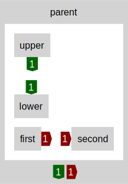

structure
stacks
In Eunice, when it's intended that an item be dependent on another, the first item is placed above the second in a stack. When items are intended to be independent of each other, they can be placed in the same level.
The terminology "stack" is used, as having uni-directional dependencies (i.e. in one direction), means dependent items are placed on top of their dependencies. The lower an item is in a stack, the more dependent items its likely to have. Where an item is in the stack, has implications for concerns such as design, risk management and independent working.
Eunice also identifies when there is a indirect bi-directional/circular dependency (see diagram).
All but the simplest of systems will require multiple stacks (see scopes / groups). Eunice is designed to be non-prescriptive so problem/domain specific stacks can develop naturally and collaboratively. Stacks can also be used to define technology/implementation based architectures (e.g. stacks levels used as layers).
For all dependencies to be uni-directional, conceptual models may need refining and reorganizing, so that concerns are expressed more independently. Some problems may also require functionality lower in the stack to support plug-ins, that can be implemented higher up in the stack. For example, by applying the dependency inversion principle from SOLID.
In some programming languages there are implied stacks, such as the order of functions in a file, or the order of files in a project.
scopes / groups
Stacks are defined in Eunice with different sized scopes and across boundaries, from individual functions, classes and files; to multiple, large codebases in different languages, frameworks and runtimes.
Eunice uses nested groups of items, each group can have an identifier and its own stack. When Eunice measures whether dependencies match the intended structure, the results for nested groups are summarized (see dependencies).

Programming languages usually include ways of grouping code, such as the directories in a file system, namespaces, classes and closures/nested functions. Groups such as these can be inferred and automatically represented in Eunice. Multiple repositories, packages, services and systems can also be analysed separately and aggregated into a single diagram.
When identifying scopes and grouping code together, its beneficial to consider the dependencies as relationships, and the concepts of cohesion and coupling.
In Eunice, hierarchical structure and unidirectional dependencies come together to encourage less coupling in inter-group dependencies, replacing them with intra-group dependencies and more cohesion.
The following diagram shows an example of how these concepts manifest in Eunice. In the diagram the 4 items and 3 dependencies stay the same, but re-structuring the groups simplifies the relationships.
dependencies
arrows
Instead of showing dependencies as lines between items, each dependency is counted into the following categories:
matches stack
green down arrow
does not match stack
red up arrow
is not independent
red horizontal arrow
Stacks are explained in the structure section.
Selecting an arrow will list the dependencies counted in it (except arrows inside items which will open the item).
counts
Dependency counts appear for both sides of the dependency, the dependent item and the item depended on. When there are multiple counts a summary of all the counts is shown at the bottom.
upper depends on lower

lower depends on upper

interdependent (stacked)

independent

first depends
on second
interdependent
(not stacked)

Dependencies within an item are also summarized and shown inside the item box, below the identifer text.
parent
depends on
item
item
depends on
parent
first item
depends on
second item
(not stacked)

Items and sub-items can also be opened. Selecting an item will show its child items and breadcrumb links for where it is in the hierarchy.
An opened item's outer dependencies are shown around the outside of its border.
If there are multiple child items a summary of their dependencies is shown in the bottom of the opened item's border.


